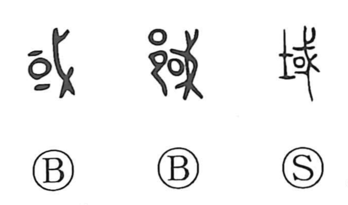

域

Kun: | On: iki
region ・ zone ・ domain ・ limits
Explanation
域 combines 土, land, with the sound element 或. 或 shows an enclosed settlement guarded with 戈, a weapon. It is the earlier form of 國, which adds a further surrounding enclosure. The territory is defined by the place that can be guarded and governed from the settlement.
域 names that delimited territory: a region, district, or area belonging within a particular boundary. It can also express the act of setting the boundary or limiting something to a certain range. A grave precinct, for example, is a specific area marked out for its purpose. The ground element makes the territorial sense explicit.